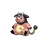

📖 英語版の図鑑説明
This Pokémon needs to be milked every day, or else it will fall ill. The flavor of Miltank milk changes with the seasons.
日本語訳
このポケモンは毎日ミルクを搾らなければ病気になってしまいます。ミルタンクのミルクの味は季節によって変わります。
📝 この図鑑文に出てくる英単語
| 英単語 | 意味 | 品詞 | レベル |
|---|---|---|---|
| milked | 乳をしぼられた | 動詞 | 大学 |
| fall | 落ちる | 動詞 | 中1 |
| flavor | 味 | 名詞 | 中3 |
| milk | ミルク | 名詞 | 中1 |
| changes | 変える | 動詞 | 中2 |
| seasons | 季節(複数形) | 名詞 | 中1 |
文法ポイント needs to be は「動詞 + to + 動詞の原形」の形で、to 以下が「〜すること」を表します。
💡 英語名「Miltank」の由来
英語名「Miltank」は、milk（ミルク）がもとになっていると考えられている。フランス語の名前は「Écrémeuh」で、écrémé（すくい取る）、meuh（モー）から作られている。
出典 Bulbapedia
📊 ミルタンクの種族値
HP95
こうげき80
ぼうぎょ105
とくこう40
とくぼう70
すばやさ100
合計 490
❓ よくある質問
- ミルタンクの英語名は？
- ミルタンクの英語名は「Miltank」です。
- ミルタンクの英語名「Miltank」の由来は？
- 英語名「Miltank」は、milk（ミルク）がもとになっていると考えられている。フランス語の名前は「Écrémeuh」で、écrémé（すくい取る）、meuh（モー）から作られている。
- ミルタンクは英語版の図鑑でどう説明されている？
- 「This Pokémon needs to be milked every day, or else it will fall ill. The flavor of Miltank milk changes with the seasons.」と書かれています。日本語にすると「このポケモンは毎日ミルクを搾らなければ病気になってしまいます。ミルタンクのミルクの味は季節によって変わります。」という意味です。
ミルタンクは第2世代（ジョウト地方）のポケモンです。第2世代（ジョウト地方）の英語名一覧 →